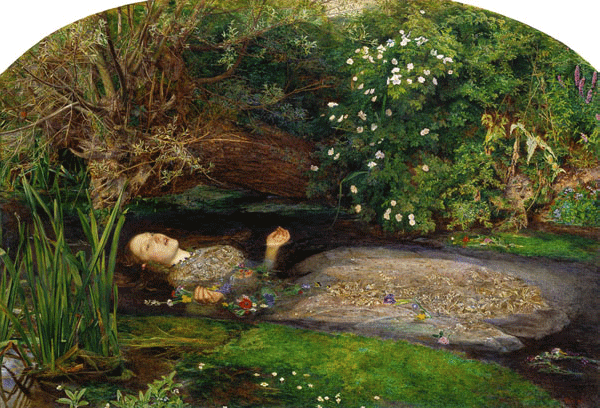

ラファエル前派の創立メンバーにしてイギリスが生んだ天才ミューズ。自由を愛し、自由な美術を愛するが、実はそのこだわりこそ彼女を縛る鎖なのかも。暑い夏の日に水風呂につかるのが何よりも楽しみ。
イギリス
"オフィーリア"
"初めての説教"
"黒きブランズウィック騎兵隊員" etc.

シェイクスピアの戯曲『ハムレット』に登場する女性を描いたもの。好意を寄せるハムレットが自分の父を殺したと知ったオフィーリアは、悲しみに狂い、歌いながら川で溺れ死ぬ。悲劇的な死を迎えた女性の儚さと美しさを、ラファエル前派らしい細密な自然描写とともに耽美に描いた傑作だ。
制作年
1851-1852年
技法・材質
油彩、カンヴァス
寸法
76.2 cm x 111.8 cm
所蔵
テート・ブリテン（イギリス）
史上最年少で英国アカデミーに入学した天才であり、ラファエル前派を結成した中心人物のひとり。モチーフを徹底的に観察して描いた画面は現在でも褪せることのない美しさを放っている。青年期こそ反骨精神あふれる画家だったが、後年は態度を軟化させ大衆にウケる画風に転向し成功を収め、アカデミー学長にまで上り詰めた。しかしそれと同時に、権威への反逆をモットーとしていたラファエル前派も終わりを迎えたのだった。
1829年6月8日
August 13, 1896
1896年8月13日(67歳没)